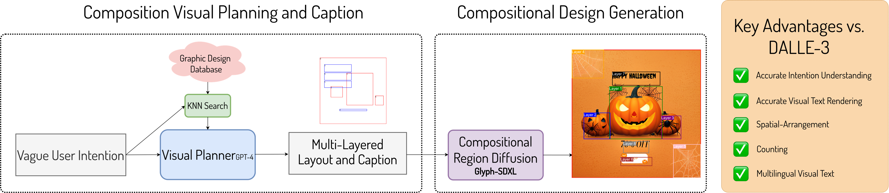

Next-gen Graphic Design for Business Content Understanding and Generation
Motivation
Generating high-quality graphic designs is crucial for effective advertising, branding, and marketing, as well as for training responsible VL models that excel in both understanding and generating business content like Posters, Flyers and others.
Key Challenges
Previous text-to-image models, such as DALL-E 3, have often struggled with generating accurate graphic designs due to their limited ability to grasp true intentions and manage fine-grained controls, such as counting-aware or spatial-relationship aware prompts and accurately render visual text.
Approach
Our innovative approach represents the next generation in graphic design generation models. It leverages extensive design space knowledge and data to perform sophisticated planning, reasoning, and generation, making it particularly effective in contexts requiring precision in counting, spatial awareness, and glyph generation.
Design Generation Results
Spatial-Arrangement


Counting

Accurate Multilingual Visual Text